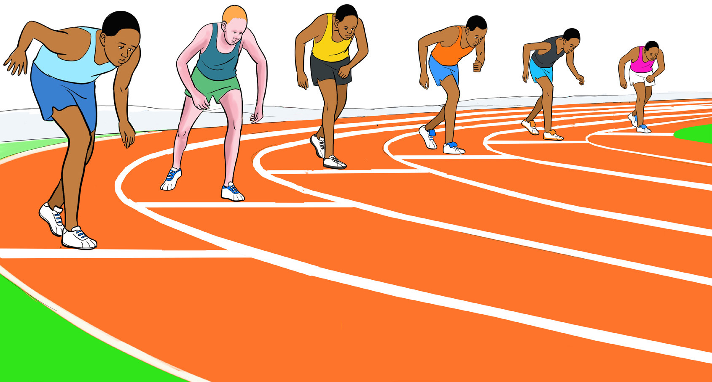
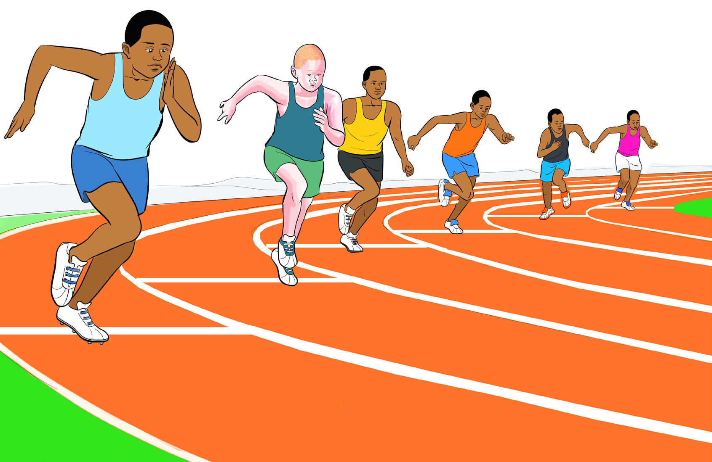

Figure 5.15: Runners in standing start position
Upon the command “Go” which is signaled by the starting gun, runners start running from the starting mark by driving off the rear foot, as shown in Figure 5.16.

Figure 5.16: Runners start running 800 m race